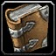

Addons are small free add-ons that change or improve the game's interface. You don't need any to play, and the same addons work for every race and class. Start with the must-haves, then add others when you want them. Every addon here has a version made for WoW Forever (checked on CurseForge, Nov 22, 2026).
Must-have install first Recommended very useful Optional nice to have Dungeons its own list for group runs

This website's leveling guide inside the game: the same steps, tick boxes, map spots, action bar changes, talents and tabs. It's built from these pages, so it always matches the website.
Unzip it into _forever_\Interface\AddOns so you get a WowForeverGuide folder. Restart the game and click the book button on your minimap.
New to addons? Read How to Install first. Press Scan after you add or remove addons, and the list shows which ones you have.
Easy way: the CurseForge app
- Download the free CurseForge app from curseforge.com/download/app. Pick Download Standalone (the other button installs it through Overwolf, which you don't need).
- Open it and pick World of Warcraft. Switch the game version to Forever. The app usually finds your game folder by itself.
- Search for an addon from the list (for example Questie) and press Install. The app also installs anything the addon needs, like QuestieDB.
- Open the app now and then and update your addons. They get fixed often, especially after a game patch.
By hand
- Click CurseForge › on an addon in the list. On its page, open Files and download the newest file marked Forever. Files for Retail or Classic won't work.
- Unzip the download. You get one or more folders, for example
TomTom. - Open your WoW: Forever game folder, then
Interface, thenAddOns. If those folders don't exist yet, make them. - Move the addon's folders into
AddOns. Each addon folder has to sit directly inside AddOns:✓ Interface\AddOns\TomTom\TomTom.toc ✗ Interface\AddOns\TomTom-v4.4.1\TomTom\TomTom.toc (one folder too deep) - If an addon needs another one (the list says Also install), download that one the same way. Questie, for example, doesn't work without QuestieDB.
Turn them on in game
- Close the game completely and start it again. New addons only load on a fresh start.
- On the character screen, click AddOns (bottom left). Make sure each addon is ticked.
- If an addon says Out of date, update it. If there's no update yet, tick Load out of date AddOns at the top of that window. It usually still works.
Something broke?
- Type /reload in chat. It restarts the interface and fixes most small problems.
- Turn all addons off on the character screen, then turn them back on one at a time to find the one causing trouble.
- Update the addon. Most errors are fixed within a few days of a patch.
- Too many buttons around your minimap? MinimapButtonButton (Optional list) tucks them into one.
- Install BugSack (Optional list). When something goes wrong, it shows which addon caused the error.
How this list was made
- Every addon was checked on its CurseForge page on Nov 22, 2026. All of them list Forever under Flavors.
- The list was picked from the most downloaded addons with a Forever version, plus a few smaller ones made just for WoW Forever.
- Addons without a Forever version (WeakAuras, OmniCC, Postal) aren't listed. Use ForeverAuras instead of WeakAuras.
- "Also install … It won't work without it" comes from each addon's Required dependency list on CurseForge. DBM's boss modules (DBM - Dungeons) are a separate project, so the app doesn't add those for you.
- The descriptions of what each addon does are based on its CurseForge page.
Not confirmed
- Questie's quest data for WoW Forever's new quests: some guide sites say parts are missing or wrong. Questie's own page doesn't say. If a marker looks off, trust the game's quest objectives.
- RestedXP: whether its WoW Forever guides are free or paid wasn't checked.
- Leatrix Plus and Leatrix Maps: the settings named here are the usual ones. Look through the settings window yourself, there are many more.
- Nova Instance Tracker: the "5 dungeons an hour, 30 a day" limit is what the addon tracks. That WoW Forever uses the same limit wasn't checked.
- Spoken: the voice-over packs it uses are separate downloads on CurseForge. Check its page for which ones you need.
- The CurseForge app's own screens weren't checked, so its buttons may be named a little differently from the steps above.
- Addons change fast. An addon without a Forever version today may get one later, so check its page.
Sources
- CurseForge: most popular addons with a Forever version
- Each addon's own CurseForge page (the CurseForge › buttons in the list).
- For comparison, guide sites that recommend Forever addons (they disagree with each other, so CurseForge was used to check): wowstats.io, Overgear, Kingboost, EZG.
Fan-made guide for World of Warcraft: Forever. Addon icons belong to their authors, shown from CurseForge.